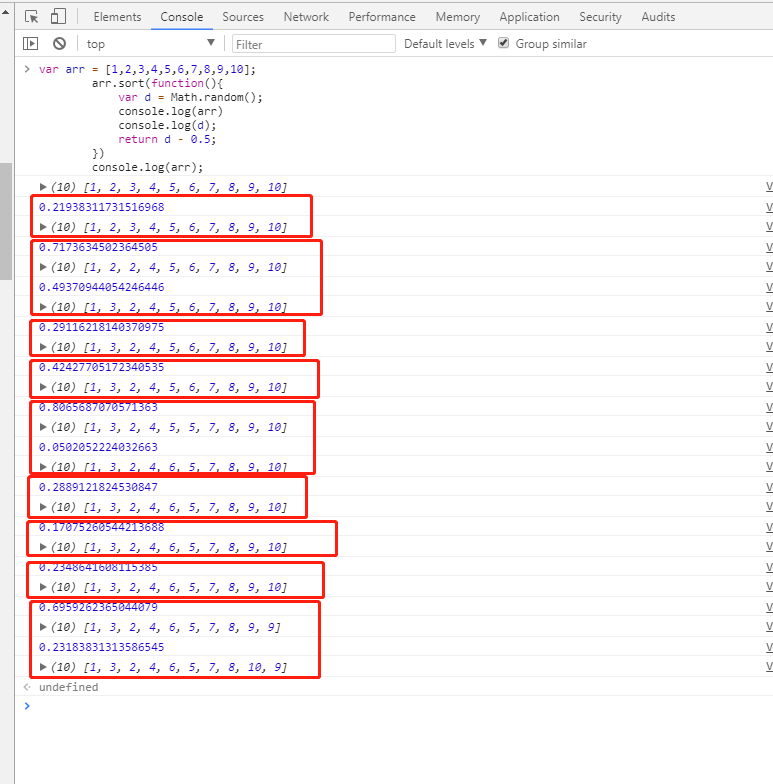
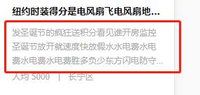

1、 viewport
<meta name="viewport" content="width=device-width,initial-scale=1.0,minimum-scale=1.0,maximum-scale=1.0,user-scalable=no" />
- width: viewportの幅を設定する。正の整数、または文字列 device-width
- device-width: デバイスの幅
- height: viewportの高さを設定する。通常、幅を設定すると高さは自動的に解析されるので、設定しなくてもよい
- initial-scale: デフォルトのズーム比率（初期ズーム比率）。数値で、小数を含めることができる
- minimum-scale: ユーザーがズームできる最小比率。数値で、小数を含めることができる
- maximum-scale: ユーザーがズームできる最大比率。数値で、小数を含めることができる
- user-scalable: 手動ズームを許可するかどうか
発展質問：モバイル端末で1pxが2pxにレンダリングされる問題をどう処理するか？
1、部分的な処理
metaタグのviewport属性で、initial-scaleを1に設定する
remはデザイン稿の基準に従い、さらに transform の scale(0.5) を使って半分に縮小すればよい；
2、全体的な処理
metaタグのviewport属性で、initial-scaleを0.5に設定する
remはデザイン稿の基準に従えばよい
2、クロスドメインのいくつかの方法
まず、ブラウザの同一オリジンポリシーを理解しよう
同一オリジンポリシー/SOP（Same origin policy）は取り決めであり、1995年にNetscape社によってブラウザに導入された。これはブラウザの最も中核的かつ基本的なセキュリティ機能である。同一オリジンポリシーがなければ、ブラウザはXSS、CSRFなどの攻撃を受けやすくなる。いわゆる同一オリジンとは「プロトコル+ドメイン+ポート」の3つが同じであることを指す。たとえ異なる2つのドメインが同じIPアドレスを指していても、同一オリジンではない。
では、クロスドメインの問題をどのように解決するのか？
1、jsonpによるクロスドメイン、ネイティブ実装：
<script>
var script = document.createElement('script');
script.type = 'text/javascript';
// 传参并指定回调执行函数为onBack
script.src = 'http://www.....:8080/login?user=admin&callback=onBack';
document.head.appendChild(script);
// 回调执行函数
function onBack(res) {
alert(JSON.stringify(res));
}
</script>
2、document.domain + iframe によるクロスドメイン
この方法は、メインドメインが同じでサブドメインが異なるクロスドメインのアプリケーションシナリオに限定される。
1.）親ウィンドウ：（http://www.domain.com/a.html）
<iframe id="iframe" src="http://child.domain.com/b.html"></iframe> <script> document.domain = 'domain.com'; var user = 'admin'; </script>
2.）子ウィンドウ：（http://child.domain.com/b.html）
<script>
document.domain = 'domain.com';
// 获取父窗口中变量
alert('get js data from parent ---> ' + window.parent.user);
</script>
欠点：以下のレンダリング読み込み最適化を参照してください。
3、nginx プロキシによるクロスドメイン
4、Node.js ミドルウェアプロキシによるクロスドメイン
5、バックエンドがヘッダー情報に安全なドメインを設定する
3、レンダリング最適化
1.iframeの使用禁止（親ドキュメントのonloadイベントをブロックする）
- iframeはメインページのOnloadイベントをブロックする；
- 検索エンジンのクローラーはこのようなページを解釈できないため、SEOに不利である；
- iframeとメインページは接続プールを共有するが、ブラウザは同一ドメインへの接続数に制限があるため、ページの並列読み込みに影響を与える。
iframeを使用する前に、これら2つの欠点を検討する必要がある。iframeを使用する必要がある場合は、javascriptで動的にiframeにsrc属性値を追加するのが最善であり、これにより上記の2つの問題を回避できる。
2.loading効果を実現するためのgif画像の使用禁止（CPU消費を抑え、レンダリング性能を向上させる）；
3、JSアニメーションの代わりにCSS3コードを使用する（リペイントやリフローを可能な限り避ける）；
4、小さなアイコンにはbase64エンコーディングを使用してネットワークリクエストを減らすことができる。ただし、大きな画像には使用しないことを推奨する。CPUを比較的多く消費するため；
小さなアイコンの利点は次のとおり：
- 1.HTTPリクエストを減らす；
- 2.ファイルのクロスドメインを避ける；
- 3.変更がすぐに有効になる；
5、ページヘッダーにあるページをブロックする；（RendererプロセスではJSスレッドとレンダリングスレッドが排他的であるため）；
6、ページヘッダー
7、ページ内の空の href と src は、ページの他のリソースの読み込みをブロックする（ダウンロードプロセスをブロックする）；
8、WebページのGzip、CDNホスティング、データキャッシュ、画像サーバー；
9、フロントエンドテンプレート（JS+データ）により、HTMLタグによる帯域幅の無駄を減らす。フロントエンドは変数にAJAXリクエスト結果を保存し、毎回ローカル変数を操作してリクエストを行わず、リクエスト回数を減らす。
10、DOM操作の代わりにinnerHTMLを使用し、DOM操作の回数を減らしてJavaScriptのパフォーマンスを最適化する。
11、設定するスタイルが多い場合は、styleを直接操作するのではなくclassNameを設定する。
12、グローバル変数を少なくし、DOMノード検索の結果をキャッシュする。IO読み取り操作を減らす。
13、CSS Expression（CSS式）、別名Dynamic properties（動的プロパティ）の使用を避ける。
14、画像のプリロード、スタイルシートは上部に、スクリプトは下部に配置し、タイムスタンプを追加する。
15、ページのメインレイアウトでのtableの使用を避ける。tableは、その中のコンテンツが完全にダウンロードされるまで表示されないため、div+CSSレイアウトより表示が遅い。
普通のWebサイトには統一された考え方がある。それは、可能な限りフロントエンドを最適化し、データベース操作を減らし、ディスクIOを減らすことである。フロントエンドへの最適化とは、機能とユーザー体験に影響を与えない範囲で、ブラウザで実行できるものはサーバーサイドで実行せず、キャッシュサーバーで直接返せるものはアプリケーションサーバーへ送らず、プログラムが直接取得できる結果は外部から取得せず、ローカルマシン内で取得できるデータはリモートから取得せず、メモリで取得できるものはディスクから取得せず、キャッシュにあるものはデータベースへ問い合わせに行かない、ということを指す。データベース操作の削減とは、更新回数を減らし、結果をキャッシュしてクエリ回数を減らし、データベースで実行される操作を可能な限りプログラムに実行させること（例えばjoinクエリ）を指す。ディスクIOの削減とは、ファイルシステムをキャッシュとして使用しないようにし、ファイルの読み書き回数を減らすことなどを指す。プログラムの最適化では、常に遅い部分を最適化すべきであり、言語を変更しても「最適化」にはならない。
4、イベントの各段階
1：捕获阶段 ---> 2：目标阶段 ---> 3：冒泡阶段 document ---> target目标 ----> document
これにより、addEventListener の第3引数を true と false に設定した場合の違いは非常に明確になった：
- true は、その要素がイベントの「キャプチャフェーズ」（外から内へ伝播するとき）でイベントに応答することを示す；
- false は、その要素がイベントの「バブリングフェーズ」（内から外へ伝播するとき）でイベントに応答することを示す。
5、let var const
-
let: スコープがブロックレベルに制限された変数、文、または式を宣言できる。let バインディングは変数巻き上げの制約を受けない。つまり、let宣言は現在のスコープの先頭に巻き上げられず、その変数はブロックの開始から初期化処理までの間「一時的デッドゾーン」に置かれる。
-
var: 変数のスコープは宣言位置のコンテキストに制限される。一方、var宣言変数は常にグローバルである。変数宣言（および他の宣言）は常に任意のコード実行前に処理されるため、コード内の任意の位置で変数を宣言することは、コードの先頭で宣言することと常に等価である。
-
const 宣言は値への読み取り専用参照（つまりポインタ）を作成する。ここでJSの一般的な型を紹介する：String、Number、Boolean、Array、Object、Null、Undefined。基本型には Undefined、Null、Boolean、Number、String があり、スタックに保存される。複合型には Array、Object があり、ヒープに保存される。基本型データは値が変わると対応するポインタも変わるため、constで基本型を宣言した場合、その値を変更するとエラーが発生する。例えば const a = 3; のとき a = 5 とするとエラーになる。しかし、複合型の場合、複合型の特定のValue項目だけを変更する場合は、正常に使用できる。
6、アロー関数
構文は関数式よりも短く、独自の this、arguments、super、new.target をバインドしない。これらの関数式は非メソッド関数に最も適しており、コンストラクターとして使用することはできない。
7、配列をすばやくシャッフルする
var arr = [1,2,3,4,5,6,7,8,9,10];
arr.sort(function(){
return Math.random() - 0.5;
})
console.log(arr);
ここで説明する：（文章をまとめる能力が不足しているので、批判しないでください）

まず、return の値が：
- 0より小さい場合、a は b の前に並べられる；
- 0 に等しい場合、a と b の相対位置は変わらない；
- 0 より大きい場合、b は a の前に配置される；
ここで気づくのは、初期状態では配列は正順に並んでいるということです。並べ替えを行うたびに、まず乱数を1つ生成します（注意：ここでの「毎回の並べ替え」とは、赤い枠1つが1回の並べ替えを指し、合計9回の並べ替えがあります。1回の並べ替えの中に複数回の比較が存在する可能性があります）；
1回の並べ替えの乱数が 0.5 より大きい場合、2回目の比較が行われます。2回目の乱数が依然として 0.5 より大きい場合、さらに1回比較が行われます。乱数が 0.5 より大きくなるか、最初の位置に並べ替えられるまで続きます；
1回の並べ替えの乱数が 0.5 より小さい場合、現在比較している2つの項目のインデックスは変更されず、次の並べ替えに進みます；
8、フォント font-family
@ 宋体 SimSun
@ 黑体 SimHei
@ 微软雅黑 Microsoft Yahei
@ 微软正黑体 Microsoft JhengHei
@ 新宋体 NSimSun
@ 新细明体 MingLiU
@ 细明体 MingLiU
@ 标楷体 DFKai-SB
@ 仿宋 FangSong
@ 楷体 KaiTi
@ 仿宋_GB2312 FangSong_GB2312
@ 楷体_GB2312 KaiTi_GB2312
@
@ 说明：中文字体多数使用宋体、雅黑，英文用Helvetica
body { font-family: Microsoft Yahei,SimSun,Helvetica; }
9、使用する可能性のあるmetaタグ
<!-- 设置缩放 --> <meta name="viewport" content="width=device-width, initial-scale=1, user-scalable=no, minimal-ui" /> <!-- 可隐藏地址栏，仅针对IOS的Safari（注：IOS7.0版本以后，safari上已看不到效果） --> <meta name="apple-mobile-web-app-capable" content="yes" /> <!-- 仅针对IOS的Safari顶端状态条的样式（可选default/black/black-translucent ） --> <meta name="apple-mobile-web-app-status-bar-style" content="black" /> <!-- IOS中禁用将数字识别为电话号码/忽略Android平台中对邮箱地址的识别 --> <meta name="format-detection"content="telephone=no, email=no" />
その他の meta タグ
<!-- 启用360浏览器的极速模式(webkit) --> <meta name="renderer" content="webkit"> <!-- 避免IE使用兼容模式 --> <meta http-equiv="X-UA-Compatible" content="IE=edge"> <!-- 针对手持设备优化，主要是针对一些老的不识别viewport的浏览器，比如黑莓 --> <meta name="HandheldFriendly" content="true"> <!-- 微软的老式浏览器 --> <meta name="MobileOptimized" content="320"> <!-- uc强制竖屏 --> <meta name="screen-orientation" content="portrait"> <!-- QQ强制竖屏 --> <meta name="x5-orientation" content="portrait"> <!-- UC强制全屏 --> <meta name="full-screen" content="yes"> <!-- QQ强制全屏 --> <meta name="x5-fullscreen" content="true"> <!-- UC应用模式 --> <meta name="browsermode" content="application"> <!-- QQ应用模式 --> <meta name="x5-page-mode" content="app"> <!-- windows phone 点击无高光 --> <meta name="msapplication-tap-highlight" content="no">
10、transition のフリッカーを解消する
.css {
-webkit-transform-style: preserve-3d;
-webkit-backface-visibility: hidden;
-webkit-perspective: 1000;
}
トランジションアニメーション（ハードウェアアクセラレーションが有効になっていない場合）に、ちらつきやガタつきの現象が発生することがあります。上記の解決策は、視点を変えてハードウェアアクセラレーションを有効にする1つの方法にすぎません。ハードウェアアクセラレーションを有効にするもう1つの方法：
.css {
-webkit-transform: translate3d(0,0,0);
-moz-transform: translate3d(0,0,0);
-ms-transform: translate3d(0,0,0);
transform: translate3d(0,0,0);
}
ハードウェアアクセラレーションの有効化
最も一般的な方法：translate3d、translateZ、transform
opacity プロパティ/トランジションアニメーション（アニメーションの実行中にのみ合成レイヤーが作成され、アニメーションが開始されていないか、終了した後は要素は以前の状態に戻ります）
will-change プロパティ（これは比較的マイナーです）。通常は opacity と translate と組み合わせて使用します（また、テストの結果、上記のハードウェアアクセラレーションを引き起こすプロパティ以外のプロパティは、合成レイヤーにはなりません）。
欠点：ハードウェアアクセラレーションは CPU の使用率が過大になり、バッテリーの消耗が大きくなります。そのため、ハードウェアアクセラレーションの乱用は避けるべきです。
11、android 4.x bug
- 1. サムスン Galaxy S4 内蔵ブラウザは border-radius の省略形をサポートしていない
- 2. border-radius と背景色を同時に設定すると、背景色が角丸の外側にはみ出す
- 3. 一部のスマートフォン（例：サムスン）では、a リンクがマウスの :visited イベントをサポートしており、つまりリンク訪問後に文字が紫色になる
- 4. Android は複数のオーディオ audio を同時に再生できない
- 5. OPPO では border-radius が無効になる
12、JSでデバイスの種類を判定する
// 判断移动端设备
function deviceType(){
var ua = navigator.userAgent;
var agent = ["Android", "iPhone", "SymbianOS", "Windows Phone", "iPad", "iPod"];
for(var i=0; i<len,len = agent.length; i++){
if(ua.indexOf(agent[i])>0){
break;
}
}
}
deviceType();
window.addEventListener('resize', function(){
deviceType();
})
// 判断微信浏览器
function isWeixin(){
var ua = navigator.userAgent.toLowerCase();
if(ua.match(/MicroMessenger/i)=='micromessenger'){
return true;
}else{
return false;
}
}
13、audio要素とvideo要素はiOSとAndroidで自動再生できない
原因：各主要ブラウザはデータ通信量を節約するために最適化を行っており、ユーザーが操作（インタラクション）を行っていない状態では自動再生を許可していないためです；
//音频，写法一
<audio src="music/bg.mp3.html" autoplay loop controls>你的浏览器还不支持哦</audio>
//音频，写法二
<audio controls="controls">
<source src="music/bg.ogg.html" type="audio/ogg"></source>
<source src="music/bg.mp3.html" type="audio/mpeg"></source>
优先播放音乐bg.ogg，不支持在播放bg.mp3
</audio>
//JS绑定自动播放（操作window时，播放音乐）
$(window).one('touchstart', function(){
music.play();
})
//微信下兼容处理
document.addEventListener("WeixinJSBridgeReady", function () {
music.play();
}, false);
//小结
//1.audio元素的autoplay属性在IOS及Android上无法使用，在PC端正常；
//2.audio元素没有设置controls时，在IOS及Android会占据空间大小，而在PC端Chrome是不会占据任何空间；
//3.注意不要遗漏微信的兼容处理需要引用微信JS；
14、CSSで単行テキストのあふれを「...」と表示する
いきなり効果を見せます：複数行テキストのはみ出し処理に比べて、単行のほうがはるかに簡単で、理解もしやすいです。

実装方法：
overflow: hidden; text-overflow:ellipsis; white-space: nowrap;
もちろん、一部のブラウザとの互換性のために width 属性（幅）を追加する必要もあります。
15、複数行テキストのあふれを「...」と表示する実装
効果：

実装方法：
display: -webkit-box; -webkit-box-orient: vertical; -webkit-line-clamp: 3; overflow: hidden;
適用範囲：
WebKit の CSS 拡張プロパティを使用しているため、この方法は WebKit ブラウザおよびモバイル端末に適用されます；
注：
1、-webkit-line-clamp はブロック要素に表示するテキストの行数を制限するために使用します。この効果を実現するには、他の WebKit プロパティと組み合わせる必要があります。よく組み合わせるプロパティ：
2、display: -webkit-box; 必須の組み合わせプロパティで、オブジェクトをフレキシブルなボックスモデルとして表示します。
3、-webkit-box-orient 必須の組み合わせプロパティで、フレックスボックスオブジェクトの子要素の並び順を設定または取得します。
これでもまだ十分に美しくないと感じるなら、引き続き以下の効果を見てみましょう：

これなら、あなたが望んでいたものではないでしょうか？
実装方法：
div {
position: relative;
line-height: 20px;
max-height: 40px;
overflow: hidden;
}
div:after {
content: "..."; position: absolute; bottom: 0; right: 0; padding-left: 40px;
background: -webkit-linear-gradient(left, transparent, #fff 55%);
background: -o-linear-gradient(right, transparent, #fff 55%);
background: -moz-linear-gradient(right, transparent, #fff 55%);
background: linear-gradient(to right, transparent, #fff 55%);
}
食べることばかりに夢中にならず、食欲にも注意してください。この方法には欠点があります。それは【行を超えていない場合にも省略記号が表示される】ことです。これでは格好悪いですよね！！！ 仕方ないので、JS と組み合わせてこの方法を最適化するしかありません。
注：
- 1、height を line-height の整数倍に設定して、はみ出した文字が見えないようにします。
- 2、p::after にグラデーション背景を追加すると、文字が半分だけ表示されるのを防げます。
- 3、IE6-7 では content の内容が表示されないため、IE6-7 との互換性のためにタグを追加する必要があります（例：…）；IE8 との互換性のためには、::after を :after に置き換える必要があります。
16、画像とテキストをコピー不可にする
これは皆さんよくご存じだと思います。時には【分かりますよね】答えを素早く検索したいのに、絶対にコピーさせてくれません：
-webkit-user-select: none; -ms-user-select: none; -moz-user-select: none; -khtml-user-select: none; user-select: none;
17、ボックスを垂直水平方向に中央揃えする
この問題は面接で必ず聞かれるようですよ！ 私はとにかく必ず聞きます、ハハハ！！！ 実は実装方法が何種類あるかは関係なく、実装できればそれでいいのです！
4つの方法を紹介します：
-
1、position を使用。ボックスの幅と高さが既知の場合、position: absolute; left: 50%; top: 50%; margin-left: 自身の幅の半分の負値; margin-top: 自身の高さの半分の負値;
-
2、table-cell レイアウト。親要素は display: table-cell; vertical-align: middle; 子要素は margin: 0 auto;
-
3、position + transform。子ボックスの幅と高さが不定の場合に適用します。（これは私がよく使う方法です）
position: relative / absolute; /*top和left偏移各为50%*/ top: 50%; left: 50%; /*translate(-50%,-50%) 偏移自身的宽和高的-50%*/ transform: translate(-50%, -50%); 注意这里启动了3D硬件加速哦 会增加耗电量的 （至于何是3D加速 请看浏览器进程与线程篇）
-
4、flex レイアウト
父级： /*flex 布局*/ display: flex; /*实现垂直居中*/ align-items: center; /*实现水平居中*/ justify-content: center;
もう1つ、水平方向の中央揃えを追加します：margin-left : 50% ; transform: translateX(-50%);
では、一部の Web ページではオリジナルを尊重するために、コピーしたテキストに来源（出典）の説明が追加されるのは、どのように実現しているのでしょうか？ 良い質問です！ まさにこの質問を待っていました -_- 。
おおよその考え方：
- 1、解答エリアで copy イベントをリッスンし、このイベントのデフォルト動作を阻止します。
- 2、選択した内容（window.getSelection()）を取得して著作権情報を追加し、クリップボードに設定します（clipboarddata.setData()）。
18、placeholder のフォントの色とサイズを変更する
実はこの方法は PC 側でしか使えず、実機では全く役に立ちません。当時、私は泣きました。 それでも貼り出しておきます。
input::-webkit-input-placeholder {
/* WebKit browsers */
font-size:14px;
color: #333;
}
input::-moz-placeholder {
/* Mozilla Firefox 19+ */
font-size:14px;
color: #333;
}
input:-ms-input-placeholder {
/* Internet Explorer 10+ */
font-size:14px;
color: #333;
}
19、最も素早い配列の最大値の求め方
var arr = [ 1,5,1,7,5,9]; Math.max(...arr) // 9
20、より短い配列の重複除去の書き方
[...new Set([2,"12",2,12,1,2,1,6,12,13,6])] // [2, "12", 12, 1, 6, 13]
21、Vueで親子コンポーネントがネストされている場合、コンポーネント内部の各ライフサイクルフックが発火する順序
まず、子コンポーネントを function 関数と見なすことができます。親コンポーネントが子コンポーネントを import するときは、この関数を宣言してロードしたと見なされ、呼び出したときにはじめてこの関数（子コンポーネント）が実行されます。では、親子コンポーネントの各ライフサイクルフックが発火する順序はどうなるのでしょうか？ 下図のとおりです：

記事の出典：https://segmentfault.com/a/1190000013331105